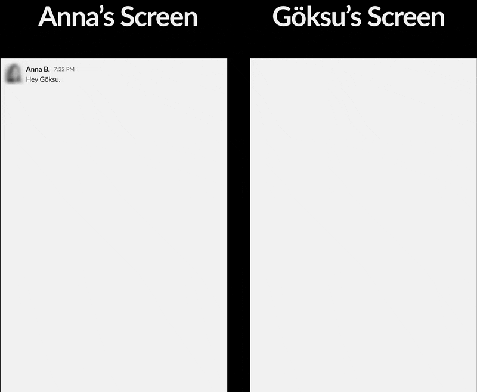

Katch
Flexible meetings with real time availability


Please note that the design deliverables included in this case study are for reference only and may not match the final designs used by Katch.
Additionally, none of the information, deliverables, or design decisions presented in this case study represent the views or opinions of Katch.
Katch is a US-based early-stage startup with less than 20 employees. At the time I joined the company as the only UX/UI designer on the team, the product was in the private beta stage.
Role — UI/UX Designer
Team — I, Anna B. (Head of Product), and two developers.
Platforms — iOS, Slack
Timeframe — October 2022 to November 2022
Links — Product website
I joined the Katch team as a UX/UI designer...
Throughout my time with Katch, I have...
designed a Slack prototype as at the time we deemed it to be the ideal medium to conduct user research and observe user behaviors, though never shipped it, and
re-designed several primary features for the Katch iOS app, conducted discussion sessions with the Head of Product and the dev team.
"I very much enjoyed working with Goksu for a couple of months when he came on board as a product designer, he was my main partner in discussions about the overall product value proposition. Goksu demonstrated strong analytical skills and could easily grasp the whole user journey from the first day of his work, which really impressed me. Thanks to his user empathy skills he helped us redesign the navigation of the app and worked on a slack app which is still to be implemented. Goksu can challenge ideas that make him a great team member and I can envision he is going to have a great career in user experience design."
After a quick onboarding that brought me up to speed, getting me to know about the issues that the product was facing at the time, the Head of Product and I conducted several brainstorming sessions to decide on the best medium to test the product-market fit and primary/secondary features.
We concluded that a Slack app would be the ideal medium as it is easy to prototype, it is relatively quick to develop, and, most importantly, most of our target audience would use Slack as part of their professional life regularly.
Around the time we had just started working on this Slack app, we considered two different forms of availability that I called "local availability" and "global availability".
Local availability: A person would be locally available when they signal that they are available to the people who sent meeting requests at a prior date or to a pre-selected group of people. This could be called "selective availability" as well.
Global availability: A person would be globally available when they signal that they are available to everyone. This could be called "unselective availability" as well.
The reason why we considered this concept of local availability was that in some very large companies, signaling that you are (globally) available to everyone on your Slack channel means that hundreds of people would be able to request meetings, making it extremely hard for the user to maintain.
For reasons that I was not informed of at the time, we were asked to quit working on the Slack app and move to work on the iOS app that the company was already developing at the time I joined.
Shortly after, per some changes in the company's short-term plan, the executive team set a date for a Product Hunt launch and to make sure that we do not miss the deadline, we had to work in a very agile manner, redesigning primary features and preparing/ explaining handoffs to engineers in an almost bi-daily manner to complete the Katch iOS app.
As my seniors were worried that the product was bloated with many features, the Head of Product and I were asked to work on and re-design some hand-picked features that were considered necessary for the optimal user experience. Those three key features were:
"Availability Hours" is a feature that helps the user to get more timely reminder notifications from the Katch iOS app. During those availability hours, a user gets notifications, reminding them to get in touch with another user who sent a meeting request at a prior date and time.
A previous version of the Katch iOS app allowed the user to turn on and off this feature, however, as we noticed that thanks to the new user flow, the user would be getting such reminder notifications anyway, we decided to make it a permanent feature that the user cannot toggle off.
Yet, in case the user did not grant notifications permission, this feature would not work at all: If the user does not get any notifications, which we consider to be necessary for the ideal user experience, then they cannot get those reminder notifications as well. So, what greets a user when they open the availability hours screen was a popup, asking the user to grant notifications permission to proceed.
To make sure the user interface is not bloated with the meeting request cards that are completed, we decided to add some kind of visual element so that the user can remove selected Katch cards from their display.
After a very lengthy discussion, we decided to use checkboxes to enable users to select and remove Katch cards from their displays. Even though I voiced my extreme displeasure with this visual design decision strongly many times, as we had to move quickly to the other features, we still went with this decision.
Some of the reasons why I was so displeased with it are (1) checkboxes commonly are not used for this function (opening an overlay), so users would click those checkboxes, expecting to select Katch cards, not to open some overlay, and (2) the home screen layout loses its consistent alignment.
More on this feature later.
My primary communication method
Let's connect on the world's largest professional network
My occasional writings reside in here
In case you need to set up a meeting asap
My code lives here